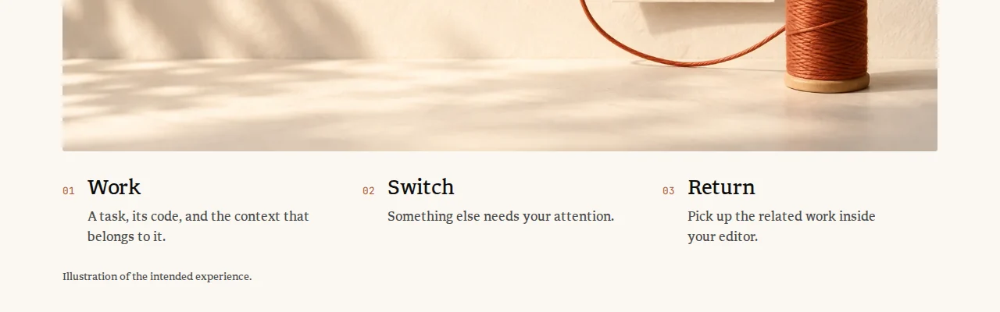
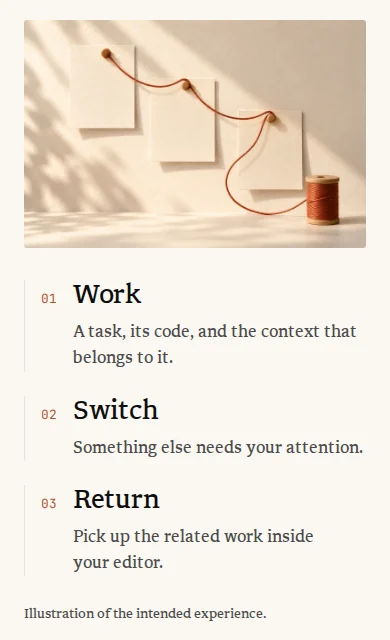
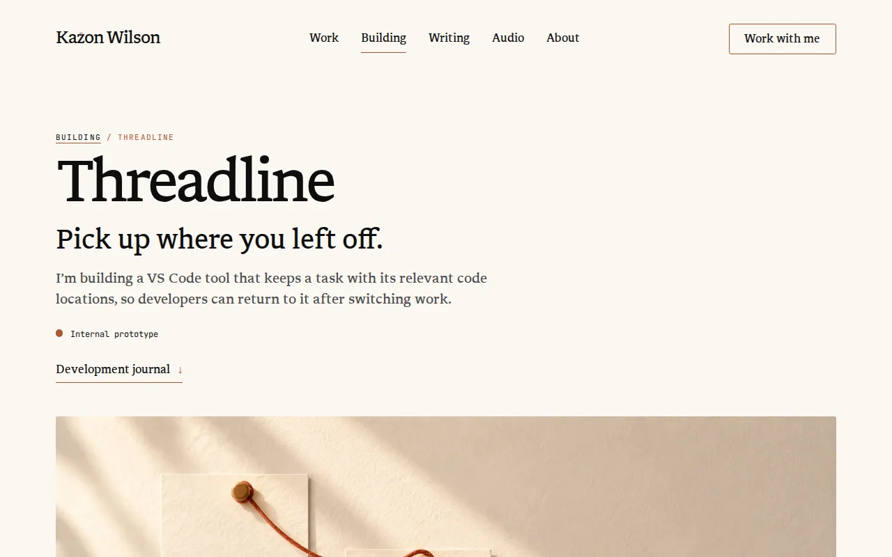
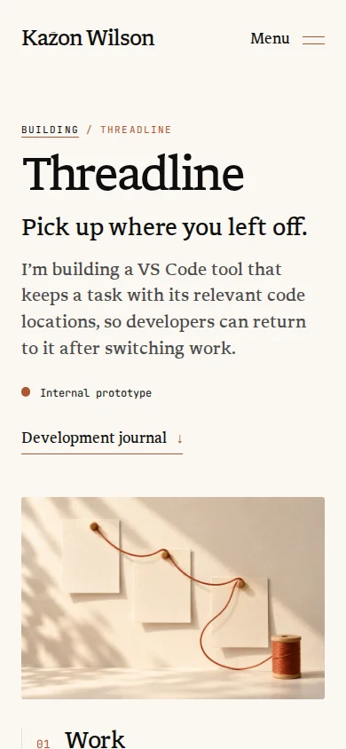
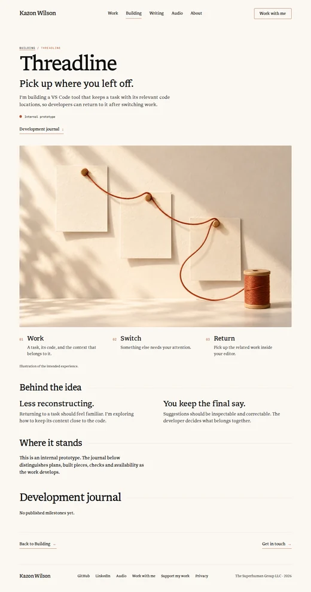
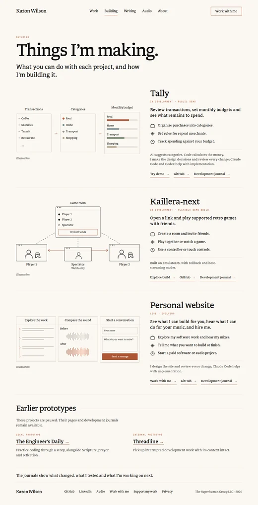
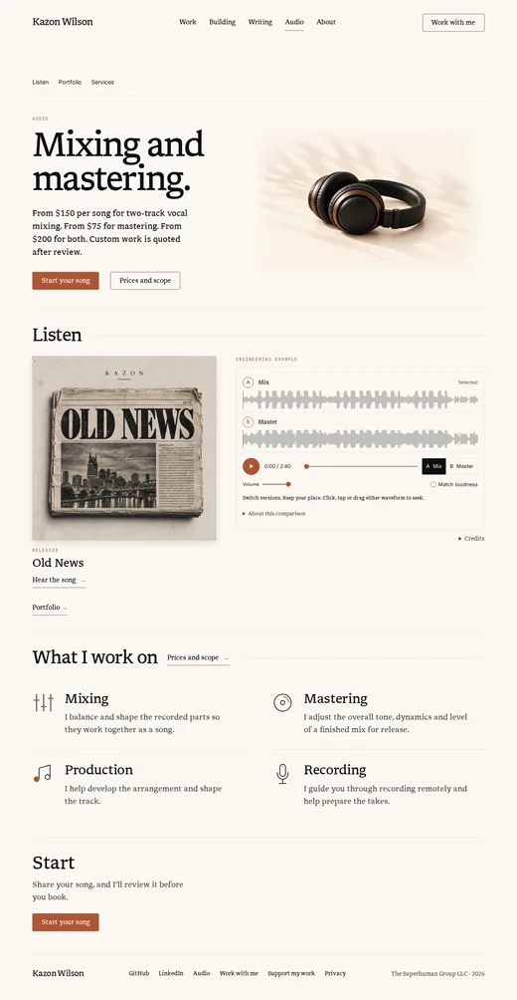

Design study · Hallmark audit follow-up · 2026-10-22
Project pages: alternatives
Five of your calls from the Hallmark audit about /building, the project pages and /audio, each beside what ships today. Nothing here is built. Pick one option per decision and reply with the IDs, for example “D6.1-B, D6.3-C”.
“Today” is cropped from the CI captures of PR #204 at f0abd1f, so it already includes that PR’s fixes listed below. The Threadline journal drawing only appears when the published feed carries its entry, which CI does not have, so its “today” is a live recreation from the component’s own markup and CSS. The alternatives are live recreations that use the site’s CSS values, its real copy and the approved Threadline picture; your browser sets their line breaks, so a line can break one word differently from CI. Gaps come from the CSS and were checked in the development preview at 1280 × 800 and 390 × 844; block heights in the D6.5 strips come from the CI captures.
On a phone the 1280-wide previews are scaled down to fit. Pinch to zoom; they stay sharp.
Already handled in PR #204, no decision needed. These apply to every option below.
The Threadline drawing uses the paper token instead of pure white, and the site’s Inter and mono faces instead of the system fonts (Hallmark #4 and #12).
Building’s link tap areas are 44px tall from a pseudo-element, so the underlines sit where the house link puts them (part of #58).
Threadline’s “Where it stands” line and the journal text stop at the shared prose measure (#34).
Journal picker labels balance their lines instead of leaving one word behind (#24).
D6.1 · The Kaillera-next drawingBrowser windows, plain nodes, a three-panel sequence, or a real capture.Recommended: D6.1-B, plain labelled nodes
D6.3 · Threadline’s three stepsNumerals beside, one run-in line, the study’s stepper, or a thread.Recommended: D6.3-C, the stepper from the study
D6.4 · Space around project titlesKeep, Hallmark’s ratio, one landing line, or a status line under a rule.Recommended: D6.4-C, one landing line
D6.5 · Section spacingKeep, one shared step, a shared step with one chapter break, or spacing by content.Recommended: D6.5-C, shared step and one break
D6.1 · Your call 10 · /building
Should the Kaillera-next drawing keep its little browser windows?
Hallmark’s gate 47, redrawn interface chrome (building-2), flagged the “•••” title bars: the room and all three players are drawn as small browser windows. It suggested plain labelled nodes or a real capture. The verifier called it overstated, because the windows say “this runs in a browser”, which is the project’s point. The Tally and website drawings beside it use plain panels.
Where it was decided: no doc records the windows. They came in with commit 2beb025 (#159, “Explain Building projects through what visitors can do”). Publicist hard rule 11 limits Kaillera-next gameplay media to what you supply and rules out ROMs, so a gameplay picture is yours to provide; the landing page capture Home already uses shows no gameplay and no game files.
Nothing. The room and the three players are small browser windows with a “•••” title bar, joined by dashed lines from the room and an accent two-way arrow between the players.
Why it could be better
One glance says every player is just a browser tab, which matches “Open a link and play”.
Trade-off
Four drawn browser windows in one picture, the pattern Hallmark flags. It is the only Building drawing with window chrome; Tally and the website use plain panels.
Effort · files
None.
Guideline check
Copy unchanged · local drawing tokens unchanged · decorative and hidden from screen readers · the drawing’s panels rise in turn only when motion is welcome · no new art.
D6.1-BPlain labelled nodes
Recommended
Why this one: it puts the Kaillera drawing in the same plain-panel family as the Tally and website drawings beside it, and the line “Open a link and play supported retro games with friends.” already says it runs in a browser.
Study drawing. Production art would need image QA.
390 wide · recreation · drawing only
What changes
The room becomes a plain panel like Tally’s, with the same member list and Invite friends. Each player becomes a circle holding the same person and controller marks; the spectator’s circle is smaller. Lines and labels stay.
Why it could be better
All three Building drawings read as one set. The relationship (one room, two players, one watcher) is clearer without four title bars competing with it.
Trade-off
The picture no longer says “browser” by itself; the line beside it carries that. Circles lean a little toward a network diagram.
Effort · files
S.src/components/BuildingIllustration.astro (Kaillera markup and CSS: drop .browser-bar, round the player frames, re-aim the three dashed lines and the arrow).
Guideline check
No copy change · existing local tokens (--ill-line, --ink, --accent, --muted) · decorative · same rise-in-turn motion and reduced-motion behaviour · a redrawn diagram: check its relationships per docs/generated-image-qa.md (explanatory diagrams) and inspect it in the page at 1440, 800, 390 and 320.
Study drawing. Production art would need image QA. The panel labels are new drawing text copy change, needs approval
390 wide · recreation · drawing only
What changes
The diagram becomes a left-to-right sequence in plain panels, built like Tally’s Transactions → Categories → Monthly budget: Create a room (the game room with Player 1 and Invite friends), Friends join (the same room with the member list), Play or watch (two players joined by the accent two-way arrow, and a spectator marked Watch only). No windows, circles or dashed lines.
Why it could be better
It tells the visit in the same order as the three action lines beside it, so the picture explains what you do rather than how the parts connect. Same panels, arrows and rise-in-turn motion as Tally, so it needs no new drawing parts.
Trade-off
Two of the three Building drawings would share one composition, which can read as a template. The room stops being the visible hub. Four short panel labels are new copy and need your approval.
Effort · files
M.src/components/BuildingIllustration.astro (Kaillera markup and CSS: the absolute layout and the connections SVG go; it reuses .panels, .panel-step, .panel and .flow-arrow).
Guideline check
New drawing labels (“Create a room”, “Friends join”, “Play or watch”, “Play together”) need approval; the rest reuses today’s drawing text · existing local tokens (--ill-line, --ink, --accent, --muted) · decorative and hidden from screen readers · the existing rise-in-turn motion applies unchanged and rests at once with reduced motion · a redrawn diagram: check its order and arrows per docs/generated-image-qa.md (explanatory diagrams) and inspect it in the page at 1440, 800, 390 and 320.
Caption “Page capture · September 2026” is a copy change and needs approval.
390 wide · recreation · picture only
What changes
The drawing is replaced by the September 2026 landing page capture that Home already shows on its Kaillera card, in a plain frame. The “Illustration” caption becomes a capture caption copy change, needs approval.
Why it could be better
Real evidence instead of a drawing, and no drawn chrome. The same picture identifies the project on Home and Building (the simplification audit, :630, lets a project thumbnail repeat).
Trade-off
It shows the empty “no open rooms right now” state, not the room, players and watcher that the three action lines describe. A dark page between two light drawings. Its floating chat button is cut off at the right edge, and it will age as the Kaillera site changes.
Effort · files
S.src/pages/building.astro (a picture for the Kaillera row), src/components/BuildingIllustration.astro (drop the Kaillera drawing), the caption.
Guideline check
Caption needs approval · tokens unchanged · alt text reuses Home’s line (“Kaillera Next’s landing page, September 2026, with no open rooms.”) · reduced motion unaffected · a page capture, not generated art, so image QA does not apply; publicist hard rules 6 and 11 do, and this capture passes both: no address bar, private URL, hostname or console, and no gameplay or game files (it names the supported game in text, as the live page does).
D6.2 · Your call 11 · /building/threadline journal
How should the “Inspect before sending” entry show the change until there is a real capture?
Hallmark’s gate 47 (building-3) flagged the drawn editor: a mock tab, a dark editor and fake buttons. It suggested a real capture in a figure, or a before and after in type with no mock tab. The drawing appears in one place, the approved journal entry threadline-inspect-before-sending-20260905, and only when the published feed carries it. CI runs with an empty feed, so its captures do not show it; option A is a live recreation from the component’s markup and CSS.
Where it was decided:docs/design-concepts/2026-09-09/threadline-detail-v2.png (the before and after editor drawing with Play change, Next step and Reset), docs/generated-image-qa.md:47-50 (real screenshots for product evidence; drawn interfaces only as clearly identified illustrations) and docs/website-system-plan.md:174-176 (identify Threadline concepts until real evidence exists). A real capture is the planned replacement. It would come from you, since Threadline is not a publicist project, and it must pass publicist hard rule 6: no file paths, workspace names or hostnames in the title bar, sidebar or terminal.
With reduced motion, Play change moves one step with no transitions, as the site does.
D6.2-AKeep as is
Recommended
Why this one: it is the drawing from the study you selected, it is clearly labelled, the approved entry text says “This is an illustration of that interaction”, and the planned replacement is a real capture, so a redraw now would be done twice.
thesuperhuman.us/building/threadline · journal panel · live recreation
390 wide · live recreation
What changes
Nothing. A dark drawn editor with a tab, an example document and the blocking dialog. Play change, Next step and Reset walk through three steps, and the label says it is not a Threadline screenshot.
Why it could be better
The motion shows the actual point: the document stays usable behind the notification.
Trade-off
Keeps the mock tab and editor chrome Hallmark flagged, and its own fifteen local colours (now named as local tokens).
Effort · files
None.
Guideline check
Copy unchanged · local colours are named tokens · 44px buttons · reduced motion: Play moves one step with no transitions · labelled illustration, not evidence.
Two short columns in the site’s type, “Before: the editor is blocked” and “After: inspect, then decide”, each quoting the real dialog or notification text, with the change line under them. No buttons, no animation, no drawn window.
Why it could be better
Hallmark’s own suggested fix. Nothing to operate, it reads at once on a phone, and it uses only site tokens and faces.
Trade-off
Loses the picture of the document staying usable behind the notification, which is the point of the change. The label’s last sentence (“Animation timing is illustrative.”) no longer applies and would go copy change, needs approval.
Effort · files
S.src/components/PayloadReviewIllustration.astro (markup and CSS; the script goes).
Guideline check
Reuses the component’s existing strings · label edit needs approval · site tokens only · no controls or motion · no new art.
D6.2-CSame steps, drawn on paper
Alternative · motion
thesuperhuman.us/building/threadline · journal panel · live recreation
Study drawing. Production art would need image QA.
390 wide · live recreation
What changes
The same three steps and controls, drawn in the site’s paper palette: the example document as plain text on paper, the dialog as an ink-edged card over a light veil, the notification as a small card. No tab, no title bar, no dark editor.
Why it could be better
Removes the mock chrome and the fifteen local colours while keeping the demonstration, and joins the plain-panel family of the Building drawings. Button edges move to --field-border (3.4:1).
Trade-off
Looks less like VS Code, so the idea is a little less concrete. Still a drawing, and a redraw that a real capture later replaces.
Effort · files
M.src/components/PayloadReviewIllustration.astro (markup and CSS; the script stays).
Guideline check
No copy change apart from dropping the “Drawn editor · Illustrative steps” bar · site tokens only · 44px buttons · transitions 400ms on the house curve; with reduced motion the steps change at once · study drawing: inspect it in the page per docs/generated-image-qa.md before release.
D6.2-DText only until a capture
Alternative
thesuperhuman.us/building/threadline · journal panel · recreation, details opened
390 wide · recreation
What changes
The entry keeps its text and “What was checked”; the drawing is removed until a real capture exists.
Why it could be better
No drawn interface at all, and nothing to maintain.
Trade-off
The approved text (highlighted) says “This is an illustration of that interaction”, which would then point at nothing. Changing that sentence means a new approved draft for this entry (publicist hard rule 2).
Effort · files
S in code (src/lib/project-story.ts stops attaching the drawing), blocked on a re-approved entry.
Guideline check
Needs an approved text change · no controls · no motion · no art.
D6.3 · Your call 12 · /building/threadline
How should Threadline’s three steps sit under the picture?
Hallmark flagged the small “01, 02, 03” numerals beside each heading as a tag beside a heading (gate 54, building-8), and the three equal columns as a feature grid (building-9, which the verifier called overstated). It is a real ordered list: Work, then Switch, then Return.
Where it was decided:docs/design-concepts/2026-09-09/threadline-detail-v2.png. The study you selected draws the steps as a stepper under the picture: three numbers in small circles joined by a hairline. The shipped page kept the order, added a line under each step, and set the numbers as mono numerals. The picture is trimmed to its bottom edge in these frames.
D6.3-AKeep as is
Today
thesuperhuman.us/building/threadline · 1280 wide · CI capture, PR #204

390 wide · CI capture, PR #204

What changes
Nothing. Mono numerals in the accent colour beside each heading, in three equal columns; on phones the steps stack with a hairline on the left.
Why it could be better
Compact, and the order is plain.
Trade-off
The tag-beside-heading pattern, and three equal columns that read like a feature row. It also departs from the study’s stepper.
Effort · files
None.
Guideline check
Copy unchanged · numerals hidden from screen readers; the list announces the order · no motion · no new art.
The numerals and the three columns go. The steps run on as one short paragraph under the picture, like a caption: each heading in ink, its line in muted text, and a small accent arrow before Switch and Return. Phones get the same paragraph, wrapped.
Why it could be better
Reads as one sequence that explains the picture, and clears both Hallmark points (no tag beside a heading, no feature row) with no art or motion, and the picture’s caption follows closer.
Trade-off
Less scannable: the headings stop standing out as headings, so the steps read as prose. It departs from the study’s stepper, and the arrows are one more accent mark on the page.
Effort · files
S.src/pages/building/threadline.astro (each numeral becomes an arrow before steps 2 and 3; the list, headings and lines set inline in CSS).
Guideline check
Copy unchanged · the headings stay h2 inside the ordered list, so screen readers keep the order · arrows hidden from screen readers; --accent on --paper is 4.78:1 · site tokens only · no motion · no new art.
D6.3-CThe stepper from the study
Recommended
Why this one: it is the composition you selected in the study, and the joining hairline turns three equal columns into one sequence without adding motion or copy.
Each number sits in a small accent circle before its heading, and a hairline runs from each heading to the next circle. The line under each step stays. On phones the circles run down a vertical hairline in place of today’s left rule.
Why it could be better
Reads as steps in order, not three features. Matches the study you selected.
Trade-off
A number still sits beside each heading, so Hallmark may still count it, though as a stepper rather than a tag. The study’s “Play walkthrough” is not part of this.
Effort · files
S.src/pages/building/threadline.astro (markup for the circle and hairline, CSS).
Guideline check
Copy unchanged · --accent on --paper is 4.78:1 for the numbers and the circle edges · the hairline is --rule and decorative · numbers stay hidden from screen readers · no motion · no new art.
D6.3-DA thread and three pins
Alternative · motion
It plays once when the steps come into view. With reduced motion the thread and pins are simply there.
thesuperhuman.us/building/threadline · 1280 wide · live recreation
Study drawing. Production art would need image QA.
390 wide · live recreation
What changes
The numerals go. A thin terracotta thread runs above the three steps (down the left on phones) with a pin at each step, echoing the thread in the picture. When the steps come into view the thread draws once from left to right over 1.4 seconds on the house curve, the pins appear in turn, and it rests.
Why it could be better
Ties the steps to the picture’s idea, one thread keeping work together, and the order reads from the thread’s direction. A small part of the “same life across the site” you asked for on September 27.
Trade-off
The first scroll motion on Threadline (today it has only the page fade), while your call 6 (reveal motion across the site) is still open. A decorative drawing to maintain. Without numbers, a skimming reader gets the order from position only.
Effort · files
M.src/pages/building/threadline.astro (SVG, CSS and a runMotion() call through src/scripts/scroll-scenes.ts).
Guideline check
Copy unchanged · --accent stroke and --ease-site · decorative SVG hidden from screen readers · reduced motion: thread and pins at rest, nothing draws · rests within 2 seconds (the system plan allows five) · study drawing: production art would need image QA.
D6.4 · Your call 25 · project pages and /building
How much space should sit above and below the title block on project pages?
Hallmark’s gate 44a (building-17, ws-19) wants a hero’s bottom padding at least 1.3 times its top, so the title block sits optically high. On a 1280 screen the project pages have 77px above the breadcrumb and 48px from the journal link to the picture; /building has 64 above and 48 below. On phones it is 48 above and 48 below. Measuring turned up one more thing: project titles land 13px lower than the /building title (breadcrumb at 189 against 176; 16px lower on a phone), so the two titles don’t line up during the page fade between them.
Where it was decided: the selected studies daily-detail-v1.png, threadline-detail-v2.png and article-desktop-v1.png all draw about as much space above the title block as below it. The .primary-page top padding (src/styles/global.css:266, line 240 at the audit commit) is shared by /building, /work, /writing and /audio; project pages set their own in src/styles/project-journal.css:2. Each frame shows the first screen only; the brackets mark the space above and below the title block.
D6.4-AKeep as is
Today
thesuperhuman.us/building/threadline · 1280 × 800 · CI capture, PR #204

77
48
390 × 844 · CI capture, PR #204

48
48
What changes
Nothing. 77px above and 48 below on a computer (40 of padding plus the picture’s 8); 48 and 48 on a phone. The picture starts at 598, so 202px of it shows in the first screen at 1280 × 800.
Why it could be better
Generous air above the big title, and the picture follows soon after the link.
Trade-off
Top-heavy by Hallmark’s rule, and project titles sit lower than the /building title.
The top stays at 77; the bottom grows to 104 (96 of padding plus the picture’s 8). Phones: 48 above, 64 below. /building’s gap under its introduction grows from 48 to 83 on a computer.
Why it could be better
Passes gate 44a as written; the title block sits optically higher.
Trade-off
Adds space the studies don’t show. The picture drops about 55px, so only about 147px of it shows in the first screen at 1280 × 800. Titles still sit lower than on /building.
Copy unchanged · fluid clamp() values like today’s · no motion · no new art.
D6.4-COne landing line
Recommended
Why this one: it matches the studies’ even spacing, lands every page title on the same line as /building and /writing, and changes one rule on each of two pages.
The top takes the value /building and /writing already use (64 on a computer, 32 on a phone), so the breadcrumb lands exactly where the Building kicker does. The bottom becomes 72 to the picture on a computer and stays 48 on a phone. /building’s gap under its introduction becomes 64 on a computer and stays 48 on a phone.
Why it could be better
Even top and bottom, like the studies. The title no longer shifts between /building and a project page, and the bottom is no longer smaller than the top.
Trade-off
The bottom is about 1.1 times the top, not the 1.3 Hallmark asks for. The picture moves 11px lower on a computer (191px of it in the first screen) and 16px higher on a phone.
The same top as C. The status and the Development journal link share one line under a hairline, which closes the title block, then 56px to the picture (48 on a phone).
Why it could be better
The rule gives the block a clear bottom edge, so the ratio matters less. The block gets shorter: the picture rises 29px on a computer (231px of it in the first screen).
Trade-off
A composition the studies don’t show. On phones the status and the link don’t fit on one line, so they stack under the rule and the picture rises only 15px.
Effort · files
M.src/layouts/ProjectLayout.astro (wrap the status and link), src/styles/project-journal.css, src/pages/building.astro (as C).
Guideline check
Copy unchanged · --rule hairline · no motion · no new art.
D6.5 · Your call 26 · /building, project pages and /audio
Should sections keep even spacing, and should the pages share it?
Hallmark (building-18, audio-20) flagged that every section on a page gets the same padding, which reads mechanical, and suggested varying it by content: tighter for a status line, more room for the journal. Measuring turned up a second point: each page is even inside, but the pages don’t share one value. /audio puts 40px each side of its rules, /building 48, Threadline’s sections sit 56 apart and its journal 64.
Where it was decided:docs/audits/2026-09-26/website-simplification-audit.md:627-628 (“Framing is standardized, content is not”: shared heading, spacing, alignment and link behaviour), docs/website-system-plan.md:29-31 (shared page gutters and section spacing in the layout layer) and docs/design-concepts/2026-09-09/audio-page-v3.png. Each option shows the whole Threadline page at 1280 with its gaps labelled, and /building and /audio as strips drawn to scale from the PR #204 CI captures at 1280. The gap under the title block belongs to D6.4 and is held at today’s value (grey).
D6.5-AKeep as is
Today
/building/threadline · 1280 · recreation of today
CI captures for reference (PR #204: Threadline, /building, /audio at 1280)



What changes
Nothing. At 1280: /building rows 48 each side of their rules; /audio 40 each side; Threadline’s sections 56 apart and the journal 64. On phones: 40 each side on /building and /audio; 56 and 64 on project pages.
Why it could be better
A calm, predictable rhythm; each page is even inside.
Trade-off
Hallmark’s point stands, and the same job uses four different numbers across pages.
Effort · files
None.
Guideline check
Unchanged.
D6.5-BOne shared step
Alternative
/building/threadline · 1280 · recreation
What changes
Gaps between unruled sections take the shared --site-section-space (77 on a computer, 48 on a phone). Ruled divisions use one named value: 48 each side on a computer and 40 on a phone, today’s Building rows. /audio moves from 40 to 48 each side on a computer; project pages from 56 and 64 to 77.
Why it could be better
Finishes the shared spacing you agreed (S5, S12): one source instead of four local numbers.
Trade-off
Even more even, so Hallmark’s point stands. Pages grow a little on a computer; Threadline is 48px shorter on a phone.
Effort · files
S.src/styles/global.css (one named value beside --site-section-space), src/styles/project-journal.css, src/components/ProjectTimeline.astro, src/pages/audio/index.astro, src/pages/building.astro (named values, no visible change).
Guideline check
No copy change · existing --site-section-space plus one named value · reduced motion unaffected (sections still rise in once) · no new art.
D6.5-CShared step and one chapter break
Recommended
Why this one: it keeps the shared, even framing you agreed and answers Hallmark with one named break per page, instead of a different number for every section.
/building/threadline · 1280 · recreation
What changes
B, plus one larger break (128 on a computer, 112 on a phone) before the part of each page that changes job: the Development journal on project pages, Earlier prototypes on /building, Start on /audio.
Why it could be better
Each page gets a rhythm (the work, then the record or the action) while every other gap stays shared and even.
Trade-off
One more named value to document and keep to one use per page. Pages grow a little more than with B.
Effort · files
S. The files in B, plus a --site-chapter-space value in src/styles/global.css and its three uses.
Guideline check
No copy change · shared tokens only · reduced motion unaffected · no new art.
D6.5-DSpacing by content
Alternative
/building/threadline · 1280 · recreation
What changes
Each section gets the space its content asks for, as Hallmark suggests: on project pages 96 from the picture to the idea, “Where it stands” tightened to 40, 112 before the journal; /building rows 64 each side and Earlier prototypes closer; /audio gives Listen more room and Start less.
Why it could be better
The most varied rhythm, with the evidence given the most air.
Trade-off
Many local numbers, so every new page has to choose its own, against the “framing is standardized” decision; the same kind of section looks different from page to page.
Effort · files
M. The files in B, with local values per section.
Guideline check
No copy change · local values rather than shared tokens · reduced motion unaffected · no new art.
Strips: blocks are sections, drawn to scale from the PR #204 CI captures at 1280. Accent brackets are gaps an option sets; grey brackets are held by D6.4 or unchanged; a black bracket is the chapter break. A horizontal line inside a gap is a hairline rule. The figure above each strip is the change in page length against today.
How they combine
The five choices are independent
D6.4 and D6.5 split the vertical spaceD6.4 sets the gap under the title block and D6.5 every gap after it. D6.4-C (64 under the title on a computer) sits well with D6.5-B or C (77 between sections).
D6.1-B with D6.2-CPuts the Kaillera and Threadline drawings in one plain-panel family with the Tally and website drawings. With D6.2-A, the Threadline drawing stays dark until its real capture.
D6.3 and D6.4 meet on one screenBoth change Threadline’s first screen at 1280, but neither depends on the other.
Your calls
What I need from you
D6.1 · Kaillera-next drawingA keep the browser windows · B plain labelled nodes · C a three-panel sequence, like Tally’s · D real landing page capture.Recommended: D6.1-B
D6.2 · Threadline drawn editorA keep until a real capture · B before and after in type · C same steps drawn on paper · D text only until a capture.Recommended: D6.2-A
D6.3 · Threadline stepsA keep · B one run-in line · C the stepper from the study · D a thread and three pins.Recommended: D6.3-C
D6.4 · Space around project titlesA keep · B Hallmark’s ratio · C one landing line · D status line under a rule.Recommended: D6.4-C
D6.5 · Section spacingA keep · B one shared step · C shared step and one chapter break · D spacing by content.Recommended: D6.5-C
If you pick D6.1-C, D6.1-D or D6.2-B, also approve the drawing labels, caption or label wording shown with that option.